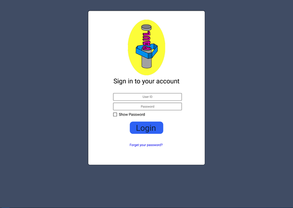
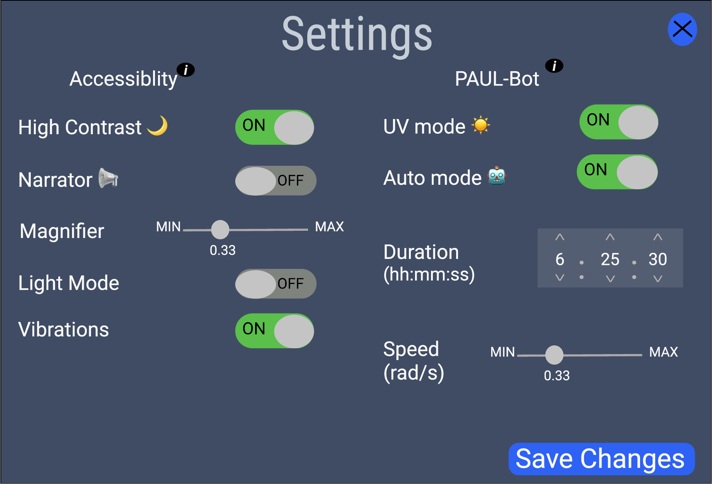
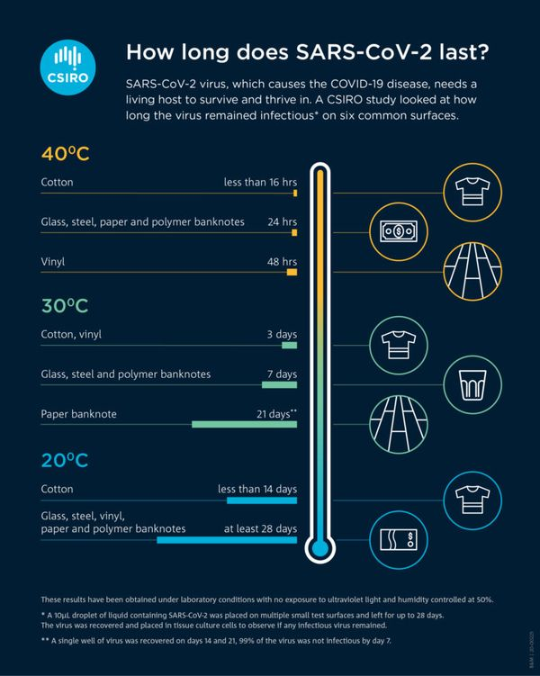

Concept
PAUL (Pole Automaton Using Ultraviolet Light) is a pole climbing robot designed to disinfect poles in public transport via a band of low wavelength ultraviolet radiation (UVC).
PAUL offers support for professional cleaners and workers on public transport during the on-going pandemic, thus having service providers in the public transportation sector as its target market.
Use Cases
1. Disinfection against COVID-19
PAUL is designed primarily for sanitising poles on public transport. The aim is to achieve frequent disinfection as poles are highly touched surfaces.
The robot grips onto a single pole with its wheels. The UI controls its upward and downward movements, as well as the emission of UV light.
During cleaning, the robot moves at a slow, constant speed, and the attached UV module containing UV-C LEDs emit short wavelength ultraviolet light for virus deactivation.
2. General Purpose Pole Climber (potential use case after the pandemic)
When the UV module is removed, PAUL becomes an automated pole-climber. After the pandemic is over, other modules can replace the UV module to achieve other functionality. (see Future Development section below)
Functionality
Features
1. Automatic Moving and Disinfecting
The switch of the UV and motors is controlled by the app. After PAUL is activated by the app, it can move up and down automatically. There are distance sensors installed on PAUL. If one of them detects an obstacle, then PAUL will turn around.
2. Authentication
Only the authenticated user can login and control PAUL.

3. Multiple Settings
The app contains accessibility. The user can toggle on/off High Contrast, Narrator, Magnifier, Light Mode and Vibrations.
For the setting of PAUL, the user can toggle on/off UV mode, Auto mode, and set work hours as well speed of PAUL.

4. Set multiple PAUL in one time
If there are multiple PAUL connecting to the app. The user can select one or more of them to set their work.

Why PAUL?
1. Efficient Disinfection
Compared to whole-room UV disinfection, PAUL is more specialised, which easily allows more frequent cleaning of the highly touched poles.
This significantly improves the outcome of disinfection by specifically targeting one common way of virus transmission, while disinfecting at a higher rate.
2. Effective Design
The design of PAUL overcomes traditional problems with UV cleaning. It limits the cleaning area, emits light at a close distance,
and maintains a constant light intensity –– all allowing stable and highly focused UV irradiation towards the pole.
3. Safety
Our primary competitor in the market would be UVD Robots, who themselves produce large robots which use UVC technology to clean entire rooms at a time.
However, our competitor is only able to deploy their robots when no humans are present due to
the damaging nature of UVC radiation.
In this case, PAUL encloses the UV emitter by a safety case.
4. Easy to Use
Users can control PAUL easily by a simple app. It connects PAUL via wifi with the help of a Raspberry Pi.
5. Cheaper
In using an LED strip and cleaning a small surface area at a time, PAUL is much cheaper than other disinfection robots that use big UV lamps.
Market Research
Background
During the ongoing pandemic, the risk of infection for taking public transportation is high due to the transmission nature of coronavirus.
One of the primary means of virus transmission is through high-touch surfaces on which viruses can last a long period of time.
Means to repetitively disinfect such surfaces during the operation of buses and trains is lacking in the market.
We therefore propose an automatic UV cleaning robot for poles – where passengers may often touch and get viruses inattentively –
as a supplement to the various general disinfection products that currently exist.

- Supplier Power Solutions - Purchasing in bulk to improve negotiating power
- Substitution Solutions - Focus on research which supports the use of UV cleaners as a support for paid professionals on high touch areas
- Conclusion - PAUL is well positioned to take advantage of the market provided we utilise available research in our pitches and offset supplier power.
- Using multiple suppliers to mitigate issues encountered with one

Studies & Key Findings
-
The Situation
- The disinfection of high-touch areas is important as COVID-19 virus “can survive for 72 hours on metal and plastics” (PP-L Health Technology Solutions). 
- For most trains and buses, touch points are now sanitized more frequently but manually by having dedicated staff to work around the clock. As “LNER cleaners have worked 307,000 hours” from March to October, 2020, it suggests that automatic cleaning robots would have a market in helping to ease cleaners’ workload and reduce their infection risks.
- There have been more than 200 UV devices installed to sanitise escalator handrails continuously across the London Underground network, in addition to applying the disinfection methods in the TfL's cleaning regime. (london.gov.uk)
- Pole cleaning can potentially be automated for Lothian Buses to achieve more frequent and effective disinfection. Currently all their vehicles are “cleaned externally and internally on a daily basis, […] including more enhanced cleaning of the main customer touch-points such as hand poles and grab rails and our driver cab areas” (Lothian).
- We have identified some potential competitors. At present, however, most UV disinfection robots are for whole-room treatment, such as the Hipac disinfection robot , UVD robots, and the one developed by Keenon Robotics. These large robots, as well as small hand-held UV disinfection devices such as the Bio-Wand sanitiser, aim for different purposes from PAUL.
- While the larger UV disinfection robots mentioned above cost around £40,000, PAUL is competitive not only for that it's the only robot on the market which will provide its functionality, but also for a much cheaper price.
- Current studies generally acknowledges the success of UV on reducing surface contamination. Particularly, SARS-CoV-2 (Covid-19) is highly susceptible to irradiation with ultraviolet light (Heilingloh et al., 2020).
- Although (Cresswell and Sheikh, 2020) raised concerns about the effects of existing UV cleaners on the market, these concerns raised were surrounding cleaning around concave surfaces and over distance – both of which are not relevant for PAUL.
- UVC of wavelength 100nm – 280nm is required for general viral deactivation. It is “a great, clean method of sterilization that involves no harsh chemicals” (UV Photons).
- According to the International UV association (IUVA), "dosage values for comparable viruses in the same SARS virus family are 10-20 mJ/cm2 using direct UVC light at a wavelength of 254nm,” which achieves 99.9% disinfection under controlled lab conditions.
- Some papers have been published now suggesting the deactivation dosage specifically for Covid-19. They showed a range of varying dosages, and the travelling speed of PAUL would be inferred based on a dosage = 10.6 mJ/cm2 (Hessling et el., 2020).
- UVC radiation with short wavelengths is “highly destructive to living tissues” (UV Photons).
- It is concerned that metallic poles can reflect UV light and may potentially make harm to people if the UV module is not properly sealed to eliminate human exposure during operation. According to this critical review, “PTFE, aluminum, and stainless-steel surfaces can reflect up to 95%, 90%, and 50% of UVC radiation, respectively.”
- A list of UV LED suppliers are found in the IUVA buyers guide.
- (Miller et al., 2015) suggested that UV cleaning solutions are best when working alongside professional cleaners, substantially increasing their effectiveness.
UV Disinfection
Safety Concerns
Implementation
Next Steps
- We are in a good position for horizontal scaling, having already prepared authentication scripts and a web UI which supports accounts with many robots.
- Currently, each pole will employ their own PAUL to achieve disinfection. For now, PAUL will only operate when there are no humans in the area, at the end of a given route. In future we leave open the possibility of expanding PAUL’s functionality to allow for operation during transit, improving commercial viability but including many ethical and design constraints.
- Start to develop relationships with procurement officers at train companies operating in Scotland e.g. Scotrail, Crosscoun-try, etc.
- Start negotiating with suppliers in order to minimise our dependency on any given supplier and improve our negotiating position when buying in bulk whilst minimising production downtime.
Future Development
1. Remould after pandemic
After the pandemic is over, PAUL can be remoulded for other use cases by simply replacing the UV module with other modules.
For example, it can be equipped with a camera system to inspect street poles for damage (such as power cables on top of the pole).
This will allow workers to inspect poles safely and only have to work high-up when damage is detected by the robot.
Hence, poles can be inspected quicker and more frequently as workers can easily deploy the robot up the pole.
2. Safety Features for Operation in Transit
To operate PAUL when the bus/train is in transit with passengers close to the UV module, more rigorous safety features should be added to reduce the chance of human exposure.
- Motion sensors can be used to detect if anything is moving towards or around it, and allow it to carry out corresponding actions – produce alarms and turn off the UV lights – to ensure that any attempt to touch the robot body will not result in exposure to UV.
- Proximity sensors can be used to give warnings when it finds anything within a set distance.
- Locks on wheels for PAUL to grip tightly onto the pole whenever it is stopped can protect it against some unexpected disturbance caused by passengers, especially children.